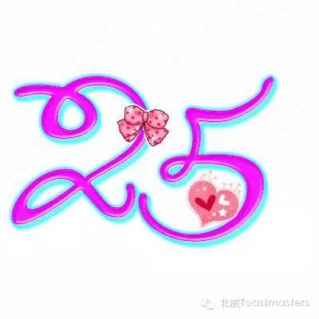
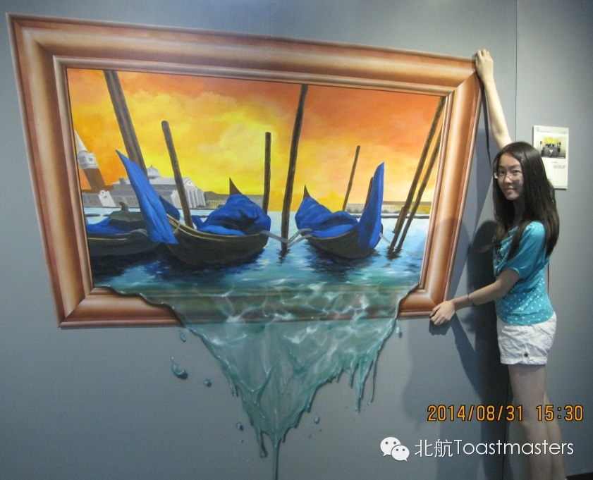
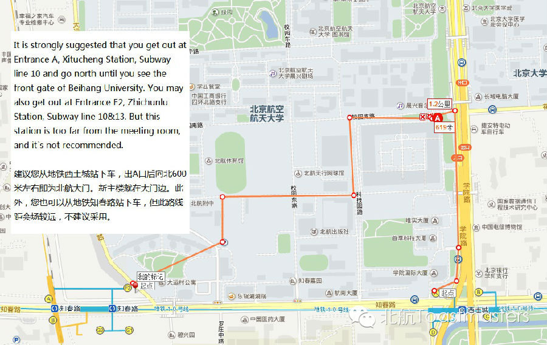

Time: Friday September.19 19:30-21:30
Venue: Room A209, New Main Building, Beihang University
Toastmaster: Deron
Table Topic Master: Veronica
"Nothing endures except changes" - Heraclitus
People don't resist change. They resist being changed! That's what life has always be. In order to live, we have never stopped changing, from the original single cell state, till now and forever. We change for living, for dream, for the one you love. Today, talented girl Veronica prepared several pleasant questions for you. You might regret for missing it!
Prepared Speech
CC4 Doris

25? That's the topic of Doris's speech! What will the intelligent girl bring us? No idea yet. But what we can ensure is that her speech must be a nice show. This Friday, let's enter her world!
Prepared Speech
CC2 Sophie

Have you ever felt tired for the high pace life? Beijing is a city of speed, quickly changing, centered around efficiency. Slowing down has been to some extent a luxury. This time, Sophie has taken her story about slowing down. What will it be? Come and get your answer!
Our meeting venue is RoomG849, New Main Building, Beihang University (北航新主楼G849房间). Click here to see large map. And you can phone to Deron for help.
TEL: 180-0125-3933

See you in the meeting!